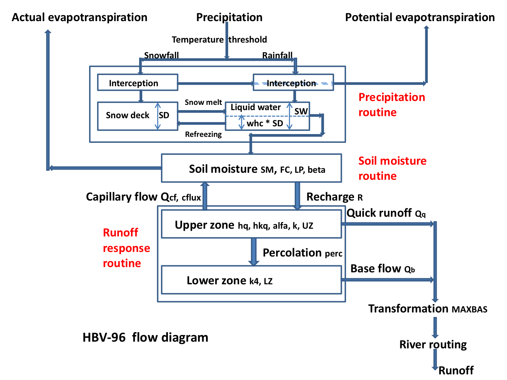

Model configurations
wflow_sbm
Wflow_sbm represents hydrological models derived from the CQflow model (Köhler et al., 2006) that have the SBM vertical concept in common, but can have different lateral concepts that control how water is routed for example over the land or river domain. The soil part of SBM is largely based on the Topog_SBM model but has had considerable changes over time. Topog_SBM is specifically designed to simulate fast runoff processes in small catchments while wflow_sbm model can be applied more widely. The main differences are for the vertical concept SBM of wflow_sbm:
- The unsaturated zone can be split-up in different layers
- The addition of evapotranspiration losses
- The addition of a capillary rise
The vertical SBM concept is explained in more detail in the following section SBM vertical concept.
Topog_SBM uses an element network based on contour lines and trajectories for water routing. Wflow_sbm models differ in how the lateral components river, land, and subsurface are solved. Below the different wflow_sbm model configurations are described.
SBM + Kinematic wave
For the lateral components of this wflow_sbm model water is routed over a D8 network, and the kinematic wave approach is used for river, overland and lateral subsurface flow. This is described in more detail in the section Kinematic wave.
An overview of the different processes and fluxes in the wflow_sbm model with the kinematic wave approach for river, overland and lateral subsurface flow:

Below the mapping for this wflow_sbm model (type sbm) to the vertical SBM concept (instance of struct SBM) and the different lateral concepts is presented. For an explanation about the type parameters between curly braces after the struct name see the section on the model parameters.
vertical => struct SBM{T,N,M}
lateral.subsurface => struct LateralSSF{T}
lateral.land => struct SurfaceFlow{T,R,L}
lateral.river => struct SurfaceFlow{T,R,L}
lateral.river.lake => struct NaturalLake{T} # optional
lateral.river.reservoir => struct SimpleReservoir{T} # optionalSBM + Local inertial river and floodplain
By default the model type sbm uses the kinematic wave approach for river flow. There is also the option to use the local inertial model for river flow with an optional 1D floodplain schematization (routing is done separately for the river channel and floodplain), by providing the following in the TOML file:
[model]
river_routing = "local-inertial" # optional, default is "kinematic-wave"
floodplain_1d = true # optional, default is falseOnly the mapping for the river component changes, as shown below. For an explanation about the type parameters between curly braces after the struct name see the section on the model parameters.
lateral.river => struct ShallowWaterRiver{T,R,L}SBM + Local inertial river (1D) and land (2D)
By default the model type sbm uses the kinematic wave approach for river and overland flow. There is also the option to use the local inertial model for 1D river and 2D overland flow, by providing the following in the TOML file:
[model]
river_routing = "local-inertial"
land_routing = "local-inertial"The mapping for the river and land component changes, as shown below. For an explanation about the type parameters between curly braces after the struct name see the section on the model parameters.
lateral.river => struct ShallowWaterRiver{T,R,L}
lateral.land => struct ShallowWaterLand{T}The local inertial approach is described in more detail in the section Local inertial model.
SBM + Groundwater flow
For river and overland flow the kinematic wave approach over a D8 network is used for this wflow_sbm model. For the subsurface domain, an unconfined aquifer with groundwater flow in four directions (adjacent cells) is used. This is described in more detail in the section Groundwater flow.
[model]
type = "sbm_gwf"
[input.lateral.subsurface]
ksathorfrac = "KsatHorFrac"
conductivity = "conductivity"
specific_yield = "specific_yield"
exfiltration_conductance = "exfilt_cond"
infiltration_conductance = "infilt_cond"
river_bottom = "river_bottom"
conductivity_profile = "exponential"
gwf_f.value = 3.0Below the mapping for this wflow_sbm model (type sbm_gwf) to the vertical SBM concept (instance of struct SBM) and the different lateral concepts. For an explanation about the type parameters between curly braces after the struct name see the section on model parameters.
vertical => struct SBM{T,N,M}
lateral.subsurface.flow => struct GroundwaterFlow{A, B}
lateral.subsurface.recharge => struct Recharge{T} <: AquiferBoundaryCondition
lateral.subsurface.river => struct River{T} <: AquiferBoundaryCondition
lateral.subsurface.drain => struct Drainage{T} <: AquiferBoundaryCondition # optional
lateral.land => struct SurfaceFlow{T,R,L}
lateral.river => struct SurfaceFlow{T,R,L}
lateral.river.lake => struct NaturalLake{T} # optional
lateral.river.reservoir => struct SimpleReservoir{T} # optionalwflow_hbv
The Hydrologiska Byrans Vattenbalansavdelning (HBV) model was introduced back in 1972 by the Swedisch Meteological and Hydrological Institute (SMHI). The HBV model is mainly used for runoff simulation and hydrological forecasting. The model is particularly useful for catchments where snow fall and snow melt are dominant factors, but application of the model is by no means restricted to these type of catchments.
The model is based on the HBV-96 model. However, the hydrological routing represent in HBV by a triangular function controlled by the MAXBAS parameter has been removed. Instead, the kinematic wave function is used to route the water downstream. All runoff that is generated in a cell in one of the HBV reservoirs is added to the kinematic wave reservoir at the end of a timestep. There is no connection between the different HBV cells within the model.
A catchment is divided into a number of grid cells. For each of the cells individually, daily runoff is computed through application of the HBV-96 of the HBV model. The use of the grid cells offers the possibility to turn the HBV modelling concept, which is originally lumped, into a distributed model.

The figure above shows a schematic view of hydrological response simulation with the HBV-modelling concept. The land-phase of the hydrological cycle is represented by three different components: a snow routine, a soil routine and a runoff response routine. Each component is discussed in more detail below.
The vertical HBV concept is described in section HBV vertical concept. The routing for river and overland flow is described in the section Kinematic wave.
Below the mapping for wflow_hbv (type hbv) to the vertical HBV concept (instance of struct HBV) and the different lateral concepts. For an explanation about the type parameters between curly braces after the struct name see the section on model parameters.
vertical => struct HBV{T}
lateral.subsurface => struct LateralSSF{T}
lateral.land => struct SurfaceFlow{T,R,L}
lateral.river => struct SurfaceFlow{T,R,L}
lateral.river.lake => struct NaturalLake{T} # optional
lateral.river.reservoir => struct SimpleReservoir{T} # optionalwflow_flextopo
The FLEXTopo model is a process-based model, which consists of different parallel classes connected through their groundwater storage. These classes are usually delineated from topographical data to represent the variability in hydrological processes across user-defined Hydrological Response Units (HRU). The main assumption underlying the concept, which was first introduced by Savenije (2010), is that different parts of the landscape fulfill different tasks in runoff generation and, hence, can be represented by different model structures. The strength of the concept is that the definition of classes and associated model structures is modular and flexible and not fixed to a predefined model structure. The flexible approach allows to develop process-based models for different topographic, climatic, geologic and land use conditions, making use of the available data and expert knowledge.
The kinematic wave function is used to route the water downstream. In a similar way as for HBV, all runoff that is generated in a cell in one of the FLEXTopo storages is added to the kinematic wave reservoir at the end of a timestep. There is no connection between the different vertical FLEXTopo cells within the model. The FLEXTopo model is implemented in a fully distributed way in the Wflow Julia framework.
In wflow_flextopo, the user is free to determine the number of classes and which model components to include or exclude for each class, this is done in the TOML file. Currently, for each storage, it is possible to bypass the storage and pass on the fluxes to the next model component. Interested users can contribute to the code by adding other conceptualizations for each storage components.
[model]
type = "flextopo"
classes = ["h", "p", "w"] #user can set the number and name of each class.
# for each component which is class specific, the user can select which conceptualization
# to apply for each class as defined above in classes = ["h", "p", "w"]
select_snow = ["common_snow_hbv"]
# available options are ["common_snow_hbv", "common_snow_no_storage"]
select_interception = ["interception_overflow", "interception_overflow", "interception_overflow"]
# available options are ["interception_overflow", "interception_no_storage"]
select_hortonponding = ["hortonponding_no_storage", "hortonponding_no_storage", "hortonponding_no_storage"]
# available options are ["hortonponding", "hortonponding_no_storage"]
select_hortonrunoff = ["hortonrunoff_no_storage", "hortonrunoff_no_storage", "hortonrunoff_no_storage"]
# available options are ["hortonrunoff", "hortonrunoff_no_storage"]
select_rootzone = ["rootzone_storage", "rootzone_storage", "rootzone_storage"]
# available options are ["rootzone_storage", "rootzone_no_storage"]
select_fast = ["fast_storage", "fast_storage", "fast_storage"]
# available options are ["fast_storage", "fast_no_storage"]
select_slow = ["common_slow_storage"]
# available options are ["common_slow_storage", "slow_no_storage"]A schematic representation of the most complete model structure including all storage components, as currently implemented in the code, is shown in the Figure below. When setting up the model with multiple classes, model structures can be adapted by bypassing storages or turning parameter values on or off (e.g.: percolation or capillary rise, non-linear versus linear outflow of the fast runoff etc.), an example of a three class model is shown in FLEXTopo vertical concept.
 Schematic representation of the FLEXTopo model for a single class model including all storages and fluxes. Main parameters are denoted in red.
Schematic representation of the FLEXTopo model for a single class model including all storages and fluxes. Main parameters are denoted in red.
In the staticmaps, the user needs to provide maps of the fraction of each class within each cell, as shown below with hrufrac. For each model parameter which is class specific, an extra dimension classes is required in the staticmaps netcdf. For an example model, see FLEXTopo example model.
[input.vertical]
hrufrac = "hrufrac_lu"Parameter multiplication of model parameters which are defined for several classes is possible through the TOML file:
[input.vertical.kf]
netcdf.variable.name = "kf"
scale = [1.0, 3.0, 4.0]
offset = [0.0, 0.0, 0.0]
class = ["h", "p", "w"]wflow_sediment
The processes and fate of many particles and pollutants impacting water quality at the catchment level are intricately linked to the processes governing sediment dynamics. Both nutrients such as phosphorus, carbon or other pollutants such as metals are influenced by sediment properties in processes such as mobilization, flocculation or deposition. To better assert and model water quality in inland systems, a better comprehension and modelling of sediment sources and fate in the river is needed at a spatial and time scale relevant to such issues.
The wflow_sediment model was developed to answer such issues. It is a distributed physics-based model, based on the distributed hydrologic wflow_sbm model. It is able to simulate both land and in-stream processes, and relies on available global datasets, parameter estimation and small calibration effort.
In order to model the exports of terrestrial sediment to the coast through the Land Ocean Aquatic Continuum or LOAC (inland waters network such as streams, lakes...), two different modelling parts were considered. The first part, called the inland sediment model, is the modelling and estimation of soil loss and sediment yield to the river system by land erosion, separated into vertical Soil Erosion processes and lateral Sediment Flux in overland flow. The second part, called the River Sediment Model is the transport and processes of the sediment in the river system. The two parts together constitute the wflow_sediment model.
Overview of the concepts of the wflow_sediment model: 
Configuration
As sediment generation and transport processes are linked to the hydrology and water flows, the inputs to the wflow_sediment model come directly from a hydrological model. The required dynamic inputs to run wflow_sediment are:
- Precipitation (can also come from the hydrological forcing data),
- Land runoff (overland flow) from the kinematic wave,
- River runoff from the kinematic wave,
- Land water level in the kinematic wave,
- River water level in the kinematic wave,
- Rainfall interception by the vegetation.
These inputs can be obtained from other wflow models such as wflow_sbm, wflow_hbv or from other sources.
Model outputs can be saved for both the inland and the instream part of the model. Some examples are listed below.
[output.vertical]
# Soil splash erosion [ton]
sedspl = "sedspl"
# Soil erosion by overland flow [ton]
sedov = "sedov"
# Total soil loss [ton]
soilloss = "soilloss"
# Total transport capacity of overland flow [ton]
TCsed = "TCsed"
# Transport capacity per particle class (clay) [ton]
TCclay = "TCclay"
[output.lateral.land]
# Total (or per particle class) sediment flux in overland flow [ton]
olsed = "olsed"
olclay = "olclay"
# Total (or per particle class) sediment yield to the river [ton]
inlandsed = "inlandsed"
inlandclay = "inlandclay"
[output.lateral.river]
# Total sediment concentration in the river (suspended + bed load) [kg/m3]
Sedconc = "Sedconc"
# Suspended load [kg/m3]
SSconc = "SSconc"
# Bed load [kg/m3]
Bedconc = "Bedconc"References
Köhler, L., Mulligan, M., Schellekens, J., Schmid, S., Tobón, C., 2006, Hydrological impacts of converting tropical montane cloud forest to pasture, with initial reference to northern Costa Rica. Final Technical Report DFID‐FRP Project No. R799.
Savenije, H. H. G. (2010). HESS opinions “topography driven conceptual modelling (FLEX-Topo).” Hydrology and Earth System Sciences, 14(12), 2681–2692. https://doi.org/10.5194/hess-14-2681-2010